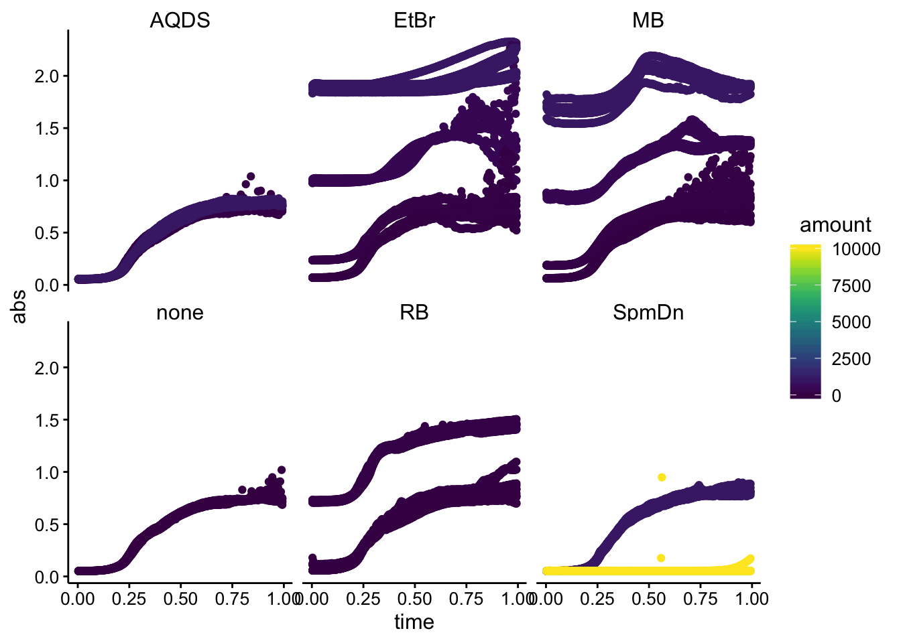

library(tidyverse)
library(cowplot)
library(viridis)
library(knitr)
library(kableExtra)
library(modelr)
library(broom)
knitr::opts_chunk$set(tidy.opts=list(width.cutoff=60),tidy=TRUE, echo = TRUE, message=FALSE, warning=FALSE, fig.align="center")
source("../../IDA/tools/plotting_tools.R")
theme_set(theme_1())Read in some sample data:
meta <- read_csv("data/plateReader_Conditions.csv")
df <- read_csv("data/plateReaderToxicity.csv") %>% gather(key = "well",
value = "abs", -time)
df_meta <- left_join(df, meta, by = "well")
ggplot(df_meta, aes(x = time, y = abs, color = amount)) + geom_point() +
facet_wrap(~molecule)
From this paper, it suggests that the modified Gompertz equation is the way to go. They desribe the three parameters as follows:
The three phases of the growth curve can be described by three parameters: the maximum specific growth rate, \(\mu_m\) is defined as the tangent in the inflection point; the lag time, \(\lambda\), is defined as the x-axis intercept of this tangent; and the asymptote \(A\) is the maximal value reached.